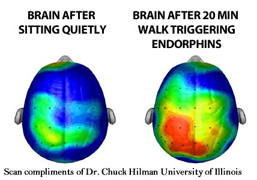
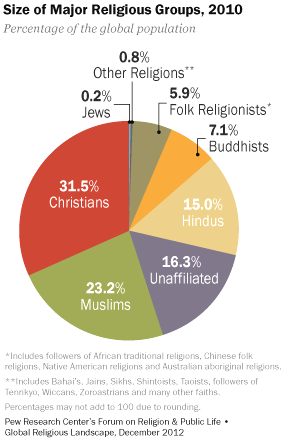
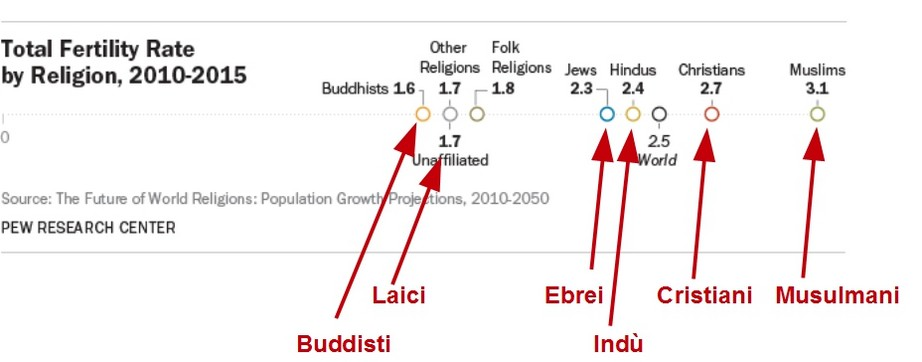
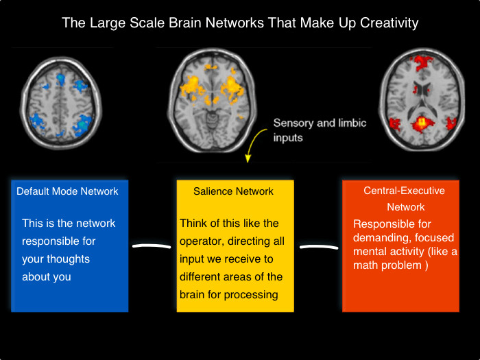
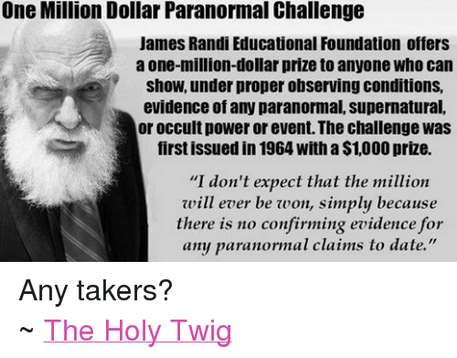
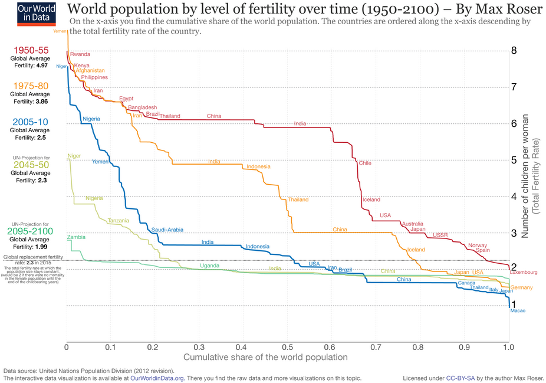

Razões psicológicas
das crenças religiosas
A mente humana, desde os tempos pré-históricos, atribui as maravilhas do mundo natural à existência de um ser superior (um designer divino), e hoje existem hipóteses científicas sobre o porquê disso aconteceu e acontece. De fato, a mente humana associa a complexidade de um sistema (ou uma criação natural) à existência de um projeto. Um número crescente de pesquisadores, incluindo o psicólogo Paul Bloom (ver bibliografia 2005), argumenta que, na origem de nossa crença nos deuses, está o dualismo intuitivo com o qual separamos os objetos do mundo em duas categorias: objetos objetos físicos e mentais. Essa distinção deu origem ao desenvolvimento de conceitos de "psicologia intuitiva" (que mais tarde resultaram em psicologia cognitiva), que nos dão a possibilidade de acreditar que existem corpos sem mentes e mentes sem corpos aos quais atribuir as características de "agente intencional". " . Como escreve o psicólogo Vittorio Girotto :
Reagire o farfalhar de um ramo movidos pelo vento é um erro menos grave que não reage ao barulho de um ramo movido por um predador. Como Darwin observou, essa tendência pode ser a base de crenças religiosas animistas (Guthrie, 1993) e também pode ser a fonte de outras características do pensamento sobrenatural, como a tendência de perceber desígnios e propósitos, mesmo em objetos que não os possuem. [...] Esse resultado é importante e confirma as correlações negativas, relatadas em outros estudos, entre o grau de inteligência e o grau de religiosidade das pessoas (Zuckerman et al., 2013) e entre o grau de difusão da educação em um dado país e grau de adesão às crenças religiosas (Braun, 2012). Qesse resultado foi replicado em uma pesquisa que mostrou que a propensão ao pensamento analítico é um índice negativo da tendência a acreditar na existência de entidades sobrenaturais e em fenômenos paranormais (Pennycook et al., 2012).
As religiões vinculam as sociedades porque exploram todo um sistema de rituais que são incrivelmente eficazes para estimular a liberação de endorfina no cérebro. É automático na presença de dor modesta, mas contínua - e quando as endorfinas atingem o cérebro, produzem uma sensação moderada de "elevação". Essa pode ser a razão pela qual os rituais religiosos geralmente envolvem atividades que exigem algum estresse físico - cantar, dançar, realizar movimentos repetidos de ondulação, assumindo posturas estranhas, como ajoelhar-se ou ficar de pernas cruzadas, contando o rosário - e às vezes até ações realmente dolorosas como auto flagelação. Obviamente, a religião não é a única maneira de obter uma dose de endorfinas. [...] Quando você experimenta uma descarga endorfínica por fazer parte de um grupo, seus efeitos parecem amplificar dramaticamente. Em particular, isso faz você se sentir em sintonia com os outros membros do grupo. Cria literalmente um senso de irmandade e comunalidade que não se manifesta quando se faz as mesmas ações sozinho.
Naturalmente, tendemos a atribuir sinais de intencionalidade humana às mais diversas coisas, de nuvens a furacões, de rochas a trens e vulcões. É como se tivéssemos hipersensibilidade a sinais de intencionalidade, especialmente aqueles transmitidos pelo movimento. Existem boas razões evolutivas para uma sensibilidade tão acentuada: é melhor ser cauteloso do que morto. É uma boa idéia, em geral, interpretar um galho quebrado como um sinal da passagem recente de um inimigo ou predador, isto é, de um agente causal, e não de um fenômeno físico natural, como a ação do vento.
As dificuldades de aceitação que a teoria da seleção natural de Darwin sempre encontrou parecem, paradoxalmente, devido a um modo de pensar adaptativo, útil para a sobrevivência e que parece intuitivamente correto, criado pela própria teoria de Darwin. Em vez disso, seria "contra-intuitivo" pensar que algo complexo pudesse se formar em tempos muito longos, como resultado de inúmeras pequenas mutações governadas pelo acaso e pelas demandas do meio ambiente. Assim, parece que o desenvolvimento de " funções cognitivas " no ser humano deu origem a " intuições religiosas"(por exemplo, a separação da mente e do corpo) que sustentava as crenças religiosas mais difundidas (fé em deuses, espíritos, almas de vários tipos). Tudo isso iniciou uma evolução cultural que possibilitou um forte desenvolvimento social através de a cooperação de grandes grupos de "estranhos" (que anteriormente lutavam entre si ferozmente).
As razões neurobiológicas dos rituais religiosos Experimentos neurocientíficos (ver bibliografia - Newberg, Lahdimawan) tornaram possível entender o que acontece no cérebro humano ao participar de ritos religiosos, como escreve o biólogo evolucionista Robin Dunbar no livro "Quantos amigos precisamos?" (P.264):
As religiões vinculam as sociedades porque exploram todo um sistema de rituais que são incrivelmente eficazes para estimular a liberação de endorfina no cérebro. É automático na presença de dor modesta, mas contínua - e quando as endorfinas atingem o cérebro, produzem uma sensação moderada de "elevação". Essa pode ser a razão pela qual os rituais religiosos geralmente envolvem atividades que exigem algum estresse físico - cantar, dançar, realizar movimentos repetidos de ondulação, assumindo posturas estranhas, como ajoelhar-se ou ficar de pernas cruzadas, contando o rosário - e às vezes até ações realmente dolorosas como auto flagelação. Obviamente, a religião não é a única maneira de obter uma dose de endorfinas. [...] Quando você experimenta uma descarga endorfínica por fazer parte de um grupo, seus efeitos parecem amplificar dramaticamente. Em particular, isso faz você se sentir em sintonia com os outros membros do grupo. Cria literalmente um senso de irmandade e comunalidade que não se manifesta quando se faz as mesmas ações sozinho.
 A figura mostra a liberação de endorfinas (zona vermelha) no cérebro de um indivíduo após 10 minutos de corrida. Endorfinas são opióides endógenos liberados pela glândula pituitária, que se acredita produzem efeitos analgésicos, induzem euforia e desempenham um papel no sistema de recompensa do cérebro. As endorfinas são provavelmente responsáveis por criar esse estado psicológico relaxado, conhecido como "o nível do corredor". L e endorfinas desempenham um papel em muitas atividades físicas, e pode ter tido um papel no surgimento de rituais xamânicos arcaicas (ver. Bibliografia Vitebsky ) e também em rituais religiosos de hoje (ver. Bibliografia Lahdimawan et al. )
As religiões vinculam as sociedades porque exploram todo um sistema de rituais que são incrivelmente eficazes para estimular a liberação de endorfina no cérebro. É automático na presença de dor modesta, mas contínua - e quando as endorfinas atingem o cérebro, produzem uma sensação moderada de "elevação". Essa pode ser a razão pela qual os rituais religiosos geralmente envolvem atividades que exigem algum estresse físico - cantar, dançar, realizar movimentos repetidos de ondulação, assumindo posturas estranhas, como ajoelhar-se ou ficar de pernas cruzadas, contando o rosário - e às vezes até ações realmente dolorosas como auto flagelação. Obviamente, a religião não é a única maneira de obter uma dose de endorfinas. [...] Quando você experimenta uma descarga endorfínica por fazer parte de um grupo, seus efeitos parecem amplificar dramaticamente. Em particular, isso faz você se sentir em sintonia com os outros membros do grupo. Cria literalmente um senso de irmandade e comunalidade que não se manifesta quando se faz as mesmas ações sozinho.
A química cerebral pode, portanto, ter favorecido o surgimento de práticas religiosas em grupo precisamente para apoiar a necessidade de manter grupos cada vez maiores de indivíduos, como especula Robin Dunbar (pp. 265-266):
O verdadeiro problema com o qual todos os sistemas de contratos sociais precisam lidar é o dos "passageiros livres" - isto é, aqueles que desfrutam dos benefícios de socializar sem pagar os custos. Macacos e macacos antropomórficos fazem isso através da navegação em grupo, uma atividade que cria confiança e, por sua vez, lança as bases para coalizões. [...] O problema da higiene, no entanto, é que é uma atividade individual, o que leva muito tempo. [...] Nossos ancestrais tiveram que encontrar um método alternativo para manter a coesão do grupo. A religião parece ser o terceiro elemento da trilogia de mecanismos que compensavam a peneiração [os outros dois são fofoca e arroz]possibilitando assim os últimos estágios da evolução social do homem. É importante, no entanto, destacar o fato de que, se essa explicação da origem das religiões estiver correta, ela começou como um fenômeno de pequena escala. Talvez as práticas religiosas primitivas incluíssem algo semelhante às danças de "transe" que são observadas hoje em religiões do tipo xamânico.
% Repartição das religiões no mundo
Origem das religiões
Estima-se que 10.000 religiões existem hoje, e acredita-se que novas religiões apareçam a uma taxa média de 2 a 3 por dia, mas muitas morreram no passado com uma taxa de sobrevivência média de 25 anos (veja a bibliografia Barrett et Al. ). Os grupos religiosos mais duradouros são aqueles que obtiveram maior sucesso no mercado cultural e alimentam o " viés de sobrevivência ", ou seja, o preconceito cultural que leva a observar apenas aqueles que sobreviveram à competição e à conservação seletiva, e a negligenciar aqueles que não sobreviveram. O psicólogo Ara Norenzayanele realizou uma investigação histórica, sociológica e psicológica completa sobre as vantagens que a crença em alguma divindade trouxe para o desenvolvimento de sociedades numericamente grandes. Ele condensou o resultado de sua pesquisa no livro "Grandes Deuses", alegando que as grandes empresas atuais eram capazes de formar e crescer, em detrimento das pequenas, porque eram apoiadas pela crença em grandes Deuses a quem eram atribuídas funções de controle e vigilância de ações. humano . Ele escreve (p. 21):
Então, aqui está como as coisas foram: alguns antigos mutantes desse molde inicial [isto é, hominídeos nos quais o desenvolvimento das funções cognitivas já havia ocorrido] foram representados por grandes deuses vigilantes com tendências intervencionistas. Os fiéis que temiam esses deuses cooperavam, confiavam um no outro e sacrificavam muito mais pelo grupo do que aqueles que tinham fé em deuses indiferenciados ou oniscientes. A ostentação da devoção e a realização de tarefas difíceis de contornar, como jejuns, tabus alimentares e rituais extravagantes, contribuíram ainda mais para transmitir a outras pessoas as crenças sinceras desses fiéis. Dessa maneira, crentes não sinceros foram impedidos de ingressar no grupo e minar suas fundações.Por meio desses e de outros mecanismos capazes de promover a solidariedade, as religiões dos Grandes Deuses transformaram grupos de estrangeiros anônimos em grandes comunidades morais e unidas, mantidas juntas pelos laços sagrados de uma jurisdição sobrenatural comum.
Além disso, a hipótese de punição sobrenatural na presença de atitudes egoístas é considerada uma adaptação evolutiva favorecida pelo aumento da capacidade humana de comunicar informações sobre a reputação dos indivíduos. Norenzayan escreve, citando a pesquisa dos psicólogos Johnson e Bering (p. 196):
Em uma espécie intensamente social e amante de fofocas como a nossa, a sobrevivência depende muito da vida cooperativa do grupo. Com o advento da mentalização, combinada com a linguagem, que possibilita a comunicação e transmissão de informações às pessoas ausentes, as pessoas começaram a descobrir e relatar transgressões sociais a outros membros do grupo. Ao cometer ações egoístas, corre-se o risco de ser pego pelo grupo social e sofrer punição com a conseqüente perda da aptidão darwiniana.
Perda da centralidade do homem
O caminho científico para a modernidade viu a centralidade que o egocentrismo humano atribuiu a si mesma desmoronar nos últimos séculos: A Terra não está mais no centro do universo (Copérnico) O homem não está mais no centro da criação (Darwin) O ego autoconsciente não está mais no centro da mente humana (Freud) O psicanalista Luigi Zoja descreve no livro "Psyche" essa progressiva desilusão humana (pp. 54-55):
Com as descobertas de Copérnico, o homem se viu pela primeira vez violentamente expulso do eixo astronômico do mundo. Ele havia sido ensinado que sendo a criatura privilegiada de Deus, a terra onde descansava os pés (o planeta Terra) era o centro do universo. Agora, de repente, a ciência lhe disse que ele estava em uma periferia indeterminável, quase invisível do espaço. [...] O segundo golpe no egocentrismo humano veio de Darwin. Acreditava-se que o homem, sempre por razões religiosas, era privilegiado entre os vivos: origem, significado, eixo da criação. Foi-lhe dito que era um produto quase aleatório ao longo da infinita escala evolutiva. Essas duas revoltas violentas do eixo externo do mundoeles também abalaram o sistema psíquico. E a verdadeira psique foi, para Freud, o objeto da terceira revolução cognitiva secular: a psicanálise. Ensina que o ego autoconsciente, convencido de fazer escolhas livres, é apenas um dos fatores em ação na mente, e apenas algumas vezes o definitivo, confiável e racional.
Desenvolvimento das religiões: do animismo ao politeísmo e depois ao monoteísmo A transição do animismo para o politeísmo e, finalmente, para o monoteísmo ocorreu muito lentamente na história humana e, de certa forma, nunca terminou. Se para os animistas os seres humanos eram apenas uma das muitas criaturas que viviam no mundo junto com plantas e animais, para os politeístas os seres humanos eram as únicas criaturas que tinham relações com as divindades, cada uma com uma função específica de ajuda. A idolatria teve muitas vantagens destacadas pelo historiador Yuval Harari no livro "Dos animais aos deuses" (pp. 260-266):
Dois mil anos de lavagem cerebral monoteísta fizeram com que a maioria dos ocidentais considerasse o politeísmo uma idolatria ignorante e infantil. Este é um estereótipo absolutamente injusto. Se queremos entender a lógica interna do politeísmo, é necessário apreender a idéia central em apoio à crença em muitos deuses. [...] A suposição básica do politeísmo, e o que o distingue do monoteísmo, é que o poder supremo que governa o mundo, que se encontra além e acima dos deuses, é desprovido de qualquer interesse e preconceito, e, portanto, ele é indiferente aos desejos, atenções e preocupações dos seres humanos. É inútil pedir a este poder a vitória na guerra, na saúde ou na chuva, porque do ponto de vista que abrange tudo, não faz diferença se este ou aquele reino vence em batalha, se uma cidade em particular prospera ou empobrece, se essa pessoa cura ou morre. [...] o politeísmo também contribui para a formação de uma tolerância religiosa. Como os politeístas acreditam, por um lado, em um poder supremo e completamente desinteressado, e por outro em muitos poderes parciais e caracterizados, não há dificuldade para os devotos de um deus aceitarem a existência e a eficácia de outros. deuses.[...] O grande passo adiante veio com o cristianismo. Essa fé começou como uma seita judaica esotérica, que procurava convencer os judeus de que Jesus de Nazaré era o messias há muito esperado. Mas um dos primeiros líderes da seita, Paulo de Tarso, pensou que se o poder supremo do universo tivesse interesses e inclinações, e se ele se sentisse disposto a se fazer carne e sangue e morrer na cruz pela salvação da humanidade, Todo mundo tinha que saber, e não apenas os judeus. Portanto, era necessário espalhar as boas novas - o evangelho - da vinda de Jesus por todo o mundo.As teses de Paulo encontraram terreno fértil. Os cristãos começaram a organizar atividades missionárias destinadas a todos os seres humanos. [...]Comparados aos politeístas, os monoteístas mostraram uma tendência a ser muito mais fanáticos e propensos ao proselitismo.
Os dois principais fatores demográficos que beneficiaram grupos religiosos foram: Conversões (gratuitas ou obrigatórias) Taxa de fertilidade
Conversões religiosas As religiões sempre ofereceram vantagens econômicas específicas que levaram as pessoas a participar. Por exemplo, no funcionamento dos mercados da Grécia antiga e da Roma antiga, o envolvimento dos deuses como testemunhas de juramentos e compromissos feitos pelos comerciantes era a base para o seu correto funcionamento. Conforme relatado pelo sociólogo Jean Ensminger (ver bibliografia ), a disseminação do Islã na África foi apoiada por regras que permitiam melhorar o padrão de vida dos convertidos, aumentando a confiança mútua, regras de troca compartilhadas e a validade do instituições de crédito. Desde o século 11, a disseminação do Islã facilitou o comércio, reduzindo os custos de transporte em um enorme território e apoiando o desenvolvimento econômico de vastas regiões. A criação de redes sociais com benefícios econômicos reais aumentou ainda mais as conversões daqueles que desejavam fazer parte dessas redes / empresas, atuando como uma alternativa concreta para muitas populações de pessoas pobres. Além disso, as conversões ao Islã foram favorecidas e reforçadas pela imitação e forte ostentação de fé (não use álcool, evite assuntos pré-maritais e extraconjugais, não coma carne de porco e faça jejuns rituais). Pelas mesmas razões, isto é, ao incentivar a confiança em outros crentes convencidos de serem observados pelo mesmo deus, o Islã conseguiu expandir-se em muitos países da
Taxa de fertilidade O sucesso cultural de grupos religiosos foi significativamente ajudado por seu sucesso reprodutivo e pela recusa em dar direitos às mulheres . As principais sociedades religiosas sempre se opuseram à contracepção, aborto, escolha de orientação sexual e homossexualidade. Norenzayan escreve (p. 216): Os devotos mais fundamentalistas de uma fé religiosa estão muito comprometidos em ter filhos (mesmo que dar à luz filhos seja uma coisa, investir em filhos é uma questão completamente diferente). Considerando que a taxa de substituição (ou substituição) em 2015 é de 2,3 filhos por mulher (o que seria 2 se a mortalidade fosse levada em consideração na população feminina do sexo feminino), temos que a taxa de fertilidade das populações leigas (que não são professa fé) permanece abaixo do índice de substituição demográfica, apesar dos fortes incentivos governamentais de países com bom bem-estar (na figura extraída do relatório do PEW, o TF de leigos é de 1,7 filhos por mulher), enquanto o de a religião está acima, (2,3 judeus - 2,4 hindus - 2,7 cristãos - 3,1 muçulmanos), garantindo a sobrevivência cultural do grupo ao qual pertencem (consulte a bibliografiaRelatório PEW). Um exemplo significativo relatado por Norenzayan (p. 217) diz respeito aos judeus europeus e mostra que os judeus ateus têm Tf = 1,5 filhos por mulher, judeus religiosos a Tf = 3 filhos por mulher e judeus ultraortodoxos de Israel a TF = 6-8 filhos por mulher.
Os monoteísmos, depois de terem vencido a competição cultural com as religiões politeístas, geraram ateísmo? O monoteísmo é uma rara variação cultural entre agentes sobrenaturais. Um dos maiores sucessos culturais da história foi o abraâmico, que ao longo do tempo se tornou um deus único. Em vez disso, a maioria das religiões oferece uma multiplicidade de deuses, não necessariamente "criadores". O historiador Yuval Noah Harari escreve no livro "Dos animais aos deuses" (p. 257): As religiões mais conhecidas da história, como o Islã e o Budismo, são universais e missionárias. Consequentemente, as pessoas tendem a pensar que todas as religiões são como elas. Na realidade, a maioria das religiões antigas era local e exclusiva. Seus seguidores acreditavam em deuses e espíritos locais e não tinham interesse em converter toda a raça humana. Tanto quanto sabemos, as religiões universais e missionárias começaram a aparecer apenas no primeiro milênio aC Seu surgimento representou uma das revoluções mais importantes da história e deu uma contribuição vital para a unificação da humanidade, bem como o nascimento de dinheiro e impérios. universal. Norenzayan escreve sobre monoteísmos (pp. 188-189): Os Grandes Deuses às vezes são identificados com o monoteísmo e são frequentemente divindades criativas; no entanto, eles não precisam de nenhuma dessas duas características para serem eficazes como observadores sobrenaturais. Penso que é apenas um preconceito cultural que penetrou no estudo das religiões a partir de uma perspectiva abraâmica. Um Grande Deus não precisa necessariamente ser único (é por isso que a ênfase no plural) e não precisa necessariamente ser criador. A evolução cultural das tradições judaica, cristã e islâmica foi reconstruída com as observações da etnografia comparada, que relatam os efeitos das crenças religiosas no comportamento social. Como o psicólogo Robert Wright apontou no livro "A evolução de Deus", aconteceu que, nos monoteísmos, rituais caros e frequentes aumentaram a cooperação e a harmonia, permitindo superar grupos religiosos menores e menos organizados . Mas depois de conquistar o mundo, eles lançaram as bases do secularismo, como relata Norenzayan (p. 247): O historiador Marcel Gauchet observa dois surpreendentes pontos de continuidade entre os três monoteísmos e os processos de secularização que emergiram deles. Primeiro, as religiões monoteístas reduziram o papel do sagrado e do sobrenatural no mundo material, confinando-as à ação de um Deus supremo e criador. Dessa maneira, o mundo, considerado sobrenatural nas religiões politeístas, tornou-se um mundo material de causa e efeito . Com o tempo, essa mudança permitiu, em algumas culturas, imaginar um Deus distante que criou o mundo, mas não lida ativamente com ele. Além disso, tornou-se possível investigar essas relações de causa e efeito aplicando o método científico. segundo,os monoteísmos introduziram outra novidade - o uso de denegrir outros deuses acusando-os de serem falsos. Consequentemente, o monoteísmo pode ter inadvertidamente plantado as sementes do ateísmo: se as pessoas começarem a negar a existência de outros deuses, é apenas uma questão de tempo para começar a negar a existência de qualquer deus.
Pensamento
paranormal e crítico
ao creditar falsas esperanças e expectativas irreais, as crenças paranormais indicam uma ausência de pensamento crítico
O mito de que usamos apenas 10% do cérebro
A ideia de que o ser humano utiliza apenas 10% da capacidade neural de seu cérebro é um mito que vem de longe. Na década de 1890 , os psicólogos de Harvard William James e Boris Sidis escreveram (no livro " As energias do homem ") que a pessoa média desenvolve apenas 10% do seu potencial cerebral. Essa distorção seguiu outras distorções do pensamento de James até a criação desse falso mito . O psicólogo Massimo Polidoro escreve (ver bibliografia ):Essa é uma crença muito difundida que sugere que haveria uma faculdade de 90% (talvez paranormal) ainda a ser descoberta. Então não é.
O cérebro humano pesa em média 3% do peso corporal, mas consome 20% das reservas diárias de energia, e esse consumo excessivo já deve nos fazer pensar. A disponibilidade de ferramentas de imagem cerebral mostrou que o cérebro humano está sempre ativo, mesmo quando não estamos envolvidos em atividades cognitivas e estamos simplesmente descansando a mente, como na "Rede de modo padrão" que identifica a vasta área do cérebro que é ativo quando nossa mente divaga .
Uma crença popular sustenta que usaríamos apenas 10% do nosso cérebro e isso explicaria alguns fenômenos, incluindo telepatia, telecinesia, leitura de livros fechados e outras habilidades extraordinárias. As coisas são realmente diferentes? «Como escrevi no livro [Journey inside the mind], na realidade, sempre usamos cem por cento do nosso potencial. (Piero Angela) _ A popularidade atual de tópicos paranormais, em particular "fantasmas", "monstros" (como Bigfoot e o monstro de Loch Ness), OVNIs e abduções de OVNIs, pode ser parcialmente atribuída a mudanças importantes nos discursos sobre questões paranormais desde dos anos 70. ( Andrea Molle, Christopher Bader ) _ O fato é que as pessoas são muito ingênuas, tendem a acreditar em coisas ridículas, se apresentadas de forma convincente. É claro que aqueles que são capazes de convencê-los querem ser pagos por isso. Nos Estados Unidos, ainda há muito dinheiro circulando pelo paranormal. Até dinheiro público, e isso é assustador. " (James Randi) _ O famoso programa de televisão americano The X-Files (1994-2002) atuou como uma arma cultural, modelando significados e práticas paranormais, incluindo os hegemônicos de natureza, como a ciência, sem comprometer outros aspectos da cultura, como a religião. Os arquivos X também podem ser descritos como uma "cultura viral" que criou uma realidade imaginária na qual os argumentos paranormais eram percebidos como reais. O sucesso dos arquivos X na televisão italiana produziu um aumento dramático no interesse pelo paranormal. Outros programas de TV paranormais transmitidos na Itália na sequência de arquivos X, como Ghost Whisperer (2005), Supernatural (2005), Grimm (2011) e outros, exploraram seu tema geral, apresentando o paranormal como algo real que pode ser ser investigado através de técnicas científicas, legais ou ocasionalmente psíquicas. (Andrea Molle, Christopher Bader) _ Em um mundo que depende cada vez mais da tecnologia e da medicina moderna, a pessoa comum depende cada vez mais da ciência para sua sobrevivência básica, mas poucos têm as habilidades ou habilidades necessárias para se envolver diretamente ou entender completamente os empreendimentos científicos (Giddens 1991b ). Parte do apelo da pesquisa paranormal poderia ser o incentivo a uma ciência "popular" que não requer anos de treinamento e um maior grau de cultura para participar de uma investigação. Grupos paranormais criaram uma versão popular da ciência. Desde que você esteja disposto a aprender as técnicas por trás de uma investigação paranormal, a "caça" está aberta a qualquer pessoa. (Andrea Molle, Christopher Bader) _ Na Itália, entre mágicos, cartomantes, astrólogos e videntes, existem mais de 155.000 operadores ocultos. Cerca de 13 milhões de pessoas recorrem a eles todos os anos, para um negócio, em 2016, de 8 bilhões de euros. (Codacons)O Paranormal usa o mito de 10% para creditar falsas crenças Escreve o escritor Benjamin Radford (ver bibliografia ):
O argumento de que os poderes psíquicos provêm da parte não utilizada do cérebro é baseado no erro lógico do argumento da ignorância. Nesse erro, a falta de evidência de uma posição (ou simplesmente a falta de informações) é usada para tentar apoiar uma solicitação específica. Mesmo se fosse verdade que a grande maioria da mente humana não é usada (o que claramente não é), esse fato não implica que qualquer capacidade adicional possa, de alguma forma, dar às pessoas poderes paranormais. Este erro ocorre continuamente no paranormal e é especialmente prevalente entre os apoiadores de OVNIs. Por exemplo: duas pessoas vêem uma luz estranha no céu. O primeiro, um defensor do OVNI, diz: "Veja, você pode explicar?" O cético responde que não, ele não pode.
Toda atividade cerebral é visível com ressonância magnética funcional (fMRI) dividida em três grandes redes neuronais (DMN, SN, CEN) 
Nos últimos anos, o foco da pesquisa em neuroimagem mudou da localização da atividade neural ligada à tarefa específica à conectividade funcional entre redes cerebrais organizadas. A riqueza de dados com base no acoplamento temporal das respostas da fMRI tornou possível identificar um modelo de rede tripla de cérebro em larga escala que consiste na Rede de modo padrão, na rede de saliência (SN) e na rede executiva central ( CEN). É amplamente reconhecido que a coordenação dessas redes desempenha um papel fundamental na organização das respostas neuronais subjacentes às funções cerebrais fundamentais.
Paranormal: a psicologia do incomum e o declínio do pensamento crítico
Sobre a instituição da Faculdade de Psicologia da Universidade de Milão do primeiro curso de "Psicologia do incomum", diz o psicólogo Massimo Polidoro , secretário nacional do CICAP (Comitê Italiano para o Controle de Afirmações no Paranormal)
Nos países anglo-saxões é chamado de psicologia anomalística, isto é, psicologia de anomalias. É um ramo da psicologia que lida com todas essas experiências incomuns - sonhos premonitórios, "flashes" telepáticos, presságios, deja-vu ... - que cada um de nós pode viver, mas que muitos acreditam ser inexplicável. Em vez disso, são experiências que podem ter uma infinidade de explicações "normais", mas que, dado seu forte impacto emocional, podem parecer "paranormais" a um público que não possui as ferramentas interpretativas necessárias.
A National Science Foundation (NSF), uma agência americana criada em 1950 para promover o avanço da ciência, em relação às Paranormal e Pseudociências, escreve:
Faz sentido perguntar por que as pessoas acreditam em astrologia, percepção extra-sensorial (PES) ou se alienígenas chegaram à Terra? As pessoas que checam seus horóscopos, ligam para números paranormais gratuitos ou seguem histórias de abduções alienígenas estão simplesmente se envolvendo em formas inofensivas de entretenimento? Ou eles estão mostrando sinais de analfabetismo científico? Preocupações foram levantadas, especialmente na comunidade científica, sobre a crença generalizada nos fenômenos paranormais. Os cientistas (e outros) observaram que as pessoas que acreditam na existência de fenômenos paranormais podem achar difícil distinguir fantasia da realidade.Suas crenças podem indicar uma ausência de habilidades de pensamento crítico necessárias não apenas para tomar decisões informadas na cabine de votação e em outros locais cívicos, mas também para fazer escolhas sábias necessárias para a vida cotidiana.
Os danos específicos causados por crenças paranormais , creditados pelo psicólogo Barry Beyerstein (ver bibliografia ), foram resumidos em:
Por que as pessoas acreditam no paranormal?
Há pelo menos duas explicações para a crença no paranormal: uma explicação psicológica e uma explicação sociológica:
Explicação psicológica Pode-se dizer que as pessoas são divididas em dois grandes grupos que diferem no " estilo cognitivo " (a chamada personalidade cognitiva dos psicólogos Richard Petty e John Cacioppo ): o intuitivo e reflexivo , ou seja, aqueles que não enfrentam voluntariamente tarefas que exigem esforço mental e aqueles que, por outro lado, dele derivam prazer. De acordo com pesquisas recentes dos psicólogos Romain Bouvet e Jean-François Bonnefon (ver bibliografia de 2015), o estilo cognitivo das pessoas é preditivo da tendência de acreditar no paranormal. Em três pesquisas experimentais, eles verificaram como as pessoas com um estilo cognitivo intuitivo, independentemente de suas crenças anteriores, depois de experimentar um evento desconcertante que parece convidar uma explicação sobrenatural, a aceitam.
Explicação sociológica Os sociólogos Andrea Molle e Christopher Bader, da Chapman University, realizaram uma pesquisa (ver bibliografia 2014) na qual analisaram o enorme crescimento nos EUA de programas de televisão dedicados ao paranormal, que dos anos 70 a 2011 cresceram de algumas unidades para pelo menos 28 shows separados. Isso fez com que o paranormal se tornasse um fenômeno de massa nos EUA, que os pesquisadores explicam da seguinte maneira:
Existe uma forma emergente de cultura paranormal, que chamamos de "Descoberta Paranormal". A subcultura da "descoberta paranormal" surgiu da confluência de três fatores: o crescente uso da linguagem e do jargão científicos por entusiastas paranormais; a democratização da investigação paranormal; e a maior disponibilidade de experiências paranormais. Juntos, esses três fatores produziram uma forma de paranormal que tem a capacidade de atuar como uma atração turística em massa [para passeios organizados em busca de fantasmas] e força econômica nas comunidades locais. Além disso, esta forma do paranormal é facilmente exportável para outras culturas.
Nos EUA, os programas de TV paranormais se tornaram parte da subcultura popular e seu sucesso levou à exportação para todo o mundo e também para a Itália. Andrea Molle e Christopher Bader escrevem:
Na Itália, o paranormal pode estar ligado a práticas religiosas históricas, incluindo relíquias, amuletos, exorcismos e, acima de tudo, o culto aos santos. Antes de o cristianismo se tornar a religião oficial do Império, os romanos adoravam um vasto panteão de deuses e deusas, a maioria dos quais de origem grega ou importados de províncias recém-conquistadas. Com a ascensão do cristianismo, a necessidade de outros deuses e deusas nunca desapareceu completamente. Os cultos antigos foram incorporados ao culto dos santos e relíquias que surgiram no início do cristianismo. Durante a Idade Média,a Igreja Católica tentou controlar e suprimir seus traços pagãos, particularmente Bruxaria (bruxaria) (Golden 2006). A demonologia foi estudada em profundidade e o exorcismo tornou-se uma prática comum (Cardini e Montesano 2005, Romeo 1990). O Renascimento, geralmente apresentado como a era do surgimento do conhecimento científico, é também a época em que a idéia de que existe conhecimento secreto começou a circular. A percepção era de que esse conhecimento estava oculto em textos sagrados antigos, como a Bíblia, e que algumas pessoas podiam ser eleitas para usá-lo (Rossi 2006).
Na Itália, muitas pessoas gostam do paranormal e isso é demonstrado pelo sucesso da RAI " Voyager ", transmitida por Roberto Giacobbo, que transmite " pseudo-divulgação " há cerca de nove anos, ou o programa " Mystery " da Mediaset. Segundo o Instituto de Estudos Políticos, Econômicos e Sociais, 13 milhões de italianos do Eurispes consultam cartomantes todos os anos por um faturamento de 6 bilhões de euros. Em relação aos EUA, a NSF relata o resultado de algumas pesquisas (ver bibliografia ):
Astrologia: cerca de um terço dos americanos acredita em astrologia, ou seja, a posição de estrelas e planetas pode afetar a vida das pessoas (Harris 1998, Gallup 1996 e Southern Focus 1998). Em 1999, 7% dos pesquisados na pesquisa da NSF disseram que a astrologia é "muito científica" e 29% responderam "cientificamente". 12% dizem que leem seu horóscopo todos os dias ou "com frequência suficiente"; 32% responderam "apenas ocasionalmente".
Percepção extra-sensorial: q uase metade ou mais acreditam em percepção extra-sensorial, ou ESP (Gallup 1996 Southern Foco 1998). De acordo com uma pesquisa, o número de pessoas que consultaram uma cartomante ou médium poderia aumentar: em 1996, 17% dos entrevistados relataram ter tido contato com uma cartomante ou médium, de 14% em 1990 (Gallup, 1996).
UFOs, fantasmas, comunicação com os mortos : Entre um terço e metade dos americanos acreditam em objetos voadores não identificados (OVNIs). Uma porcentagem um pouco menor acredita que os alienígenas pousaram na Terra (Gallup 1996, Southern Focus 1998). Outras pesquisas mostraram que de um quinto a metade dos entrevistados acreditam em casas e fantasmas assombrados (Harris 1998, Gallup 1996, Sparks, Nelson e Campbell 1997), cura da fé (Roper 1994, USA Today 1998), comunicação com os mortos (Gallup 1996) e números da sorte. Pesquisas periodicamente repetidas também mostram uma crença crescente nesses exemplos de pseudociência (USA Today 1998).
A crença na maioria dos fenômenos, mas não em todos os paranormais, é maior entre as mulheres que os homens. Mais mulheres do que homens acreditam em PES (especialmente telepatia e precognição), astrologia, fantasmas e cura psíquica. Por outro lado, os homens têm crenças mais fortes nos OVNIs e formas de vida bizarras, por exemplo, o monstro do Lago Ness (Irwin, 1993). Na pesquisa da NSF, 39% das mulheres, em comparação com 32% dos homens, disseram que a astrologia é "muito" científica; 56% das mulheres, em comparação com 63% dos homens, responderam "nada científicas".
O ilusionista e popularizador científico James Randi  O famoso ilusionista e cético James Randi dedicou sua vida a expor os ilusionistas mais famosos (incluindo Uri Geller). James Randi instituiu um prêmio de um milhão de dólares para quem pudesse mostrar, sob condições cientificamente controladas e previamente acordadas entre as partes, um fenômeno paranormal de qualquer tipo, ou ligado ao ocultismo, ou um milagre. Em 2015, o prêmio foi cancelado depois que Randi se aposentou, e a James Randi Educational Foundation o substituiu por doações a grupos sem fins lucrativos que promovem o pensamento crítico.
Conclusões (provisórias): os charlatães paranormais propõem uma visão falsa da capacidade do cérebro humano
Muitas pessoas, quando experimentam eventos desconcertantes e, à primeira vista inexplicáveis, como percepções extra-sensoriais (telepatia, clarividência, precognição etc.), experiências extracorpóreas, manifestações de fantasmas, milagres, tendem a aceitar explicações que não são cientificamente comprovadas. Os psicólogos atribuem essa aceitação à maneira como a mente humana é construída na maioria das pessoas, ou seja, naquele estilo cognitivo que tende a evitar a reflexão e aceita a primeira explicação intuitiva disponível. Os sociólogos observam que essa tendência é dominada e ampliada pela mídia de massa com uma impressão paranormal norte-americana específica queDesenvolve-se nos EUA desde os anos 90 e depois se espalhou por todo o mundo com programas especiais de televisão como The X-Files e outros. Essa subcultura tornou- se, nos EUA, um empreendimento econômico próspero que transformou a cultura popular americana em um conjunto de grupos paranormais envolvidos em investigações locais e passeios locais relacionados a atrações turísticas. Essas iniciativas também estão surgindo lentamente na Itália, e grupos de caçadores de fantasmas já estão presentes em algumas cidades italianas. O que esses fenômenos, amplificados pelo impulso da indústria da televisão e do cinema , destacam é a ausência, ou redução, do pensamento crítico de grande parte da população.
Bibliografia (aqueles que fazem boas leituras são menos manipuláveis)
Tara Parker-Pope (2007), Medical Myths Even Doctors Believe - The New York Times Robynne Boyd (2008), Do People Only Use 10 Percent of Their Brains? - Scientific American Benjamin Radford (1999), The Ten-Percent Myth (PDF) [11 citazioni] (2011), La parapsicologia cede il passo alla psicologia dell'insolito? - Le Scienze Massimo Polidoro (2016), Usiamo solo il 10% del cervello? Alcuni sì, ma… Marco Cappadonia Mastrolorenzi (2015), Uno straordinario viaggio nella mente umana – intervista a Piero Angela - Query Barry Beyerstein (1995), Distinguishing science from pseudoscience (PDF) [21 citazioni] Vinod Menon, Lucina Q. Uddin (2000), Saliency, switching, attention and control: a network model of insula function [2168 citazioni] - PMC Danilo Di Diodoro (2012), Paranormale, 14 persone su 100 ci credono - Corriere della Sera Barry Beyerstein, Do we really use only 10 percent of our brains? - Scientific Americans Paolo Attivissimo (2012), Adesso basta con queste fesserie irresponsabili sul 2012: c’è chi si spaventa sul serio - Il Disinformatico Emilio Sassone Corsi (2012), Scienza buona e cattiva in TV (2018), Chapman University Survey of American Fears 2017 - Paranormal America 2017 Andrea Molle, Christopher Bader (2014), 'Paranormal Science' from America to Italy: A Case of Cultural Homogenisation (PDF) (2014), In Italia meglio dal mago che dallo psicologo! - Medicitalia.it (2017), Maghi e astrologi non conoscono crisi: affari per otto miliardi - La Repubblica Ignazio Dessì (2015), Paranormal Hunters, ovvero cacciatori di fantasmi: "A volte erano bufale, altre no. Ecco i nostri video e foto impressionanti" Massimo Polidoro (2000), Le avventure di James Randi - Biografia di un illusionista Elio Cogno (2012), Milano, James Randi dà spettacolo - Il Fatto Quotidiano James Randi ha messo in palio 1 milione di dollari per un autentico fenomeno paranormale - Cicap - Testo per concorrere al premio Randi Marco Valsecchi (2015), Bufale, religione, scetticismo e vaccini, una chiacchierata con James Randi - Wired Romain Bouvet, Jean-François Bonnefon (2015), Non-Reflective Thinkers Are Predisposed to Attribute Supernatural Causation to Uncanny Experiences [10 citazioni] The Best Horror-Supernatural-Ghost-Paranormal Movies List
Por que as crenças
fazem parte do nosso modo de pensar?
A luta contínua do ser humano para eliminar ilusões das crenças
Então, o que é uma crença? É uma regra de ação, ou seja, é "um aviso para nós mesmos de como devemos, ocasionalmente, agir em relação a certas coisas". ( Charles Sanders Peirce )
A essência da atitude científica é que nossa mente é forçada a " acreditar " somente quando não pode " pensar ". Essa idéia, melhor ideologia, é contrária ao modus operandi das ciências cognitivas. Para as ciências cognitivas, acreditar é uma certa maneira de pensar . (Paolo Legrenzi)
A dissonância cognitiva oferece a cada indivíduo a oportunidade de testar a bondade de suas opiniões, mas poucos exploram essa possibilidade, enquanto muitos a evitam. _ Nosso cérebro tem uma forte tendência a formar crenças para dar sentido à existência. É legítimo pensar que o cérebro criou crenças para dar sentido à morte - o evento que nos faz sentir mais próximos dos insetos do que dos anjos - e do sofrimento, dois eventos que podem induzir a autoconsciência à perda e perda de significado da vida. Crenças e religiões seriam um aspecto sociobiológico da cultura humana para salvaguardar a vida. (Arnaldo Benini)
Aqueles que escapam completamente da ideia de que é possível estar errado não podem aprender nada, exceto a técnica. ( Gregory Bateson - Mente e Natureza p.42 )
Existem duas maneiras de cometer erros: acreditar no que não é e recusar-se a acreditar no que é. ( Søren Kierkegaard)
Apesar da revolução cognitiva iniciada pelo método científico, há uma persistência de crenças falsas e contraditórias na mente de todos nós. De fato, parece que as crenças pertencem constitutivamente ao nosso estilo de pensamento. O psicólogo Paolo Legrenzi , no livro "Acredite", descreve a descoberta da persistência de crenças na mente humana da seguinte maneira (pp. 43-46):
O método científico e as técnicas experimentais começam a explorar o funcionamento da mente humana, isto é, a sede, entre outras coisas, das crenças. Com o nascimento das ciências cognitivas, no final do século passado, as crenças recuperam sua dignidade como um campo de estudo científico. [...] Paradoxalmente, entretanto, o domínio das ciências e da deusa Razão falhou em erradicar as crenças das consciências individuais. Os estudiosos se perguntaram as razões dessa persistência, mesmo que limitadas às consciências individuais. Foi assim descoberto que o quadro é muito mais complexo do que o simples contraste entre crenças pessoais e conhecimento científico. Existe um vasto e sistematicamente descritível território de conhecimento ingênuo: física ingênua, biologia ingênua, economia ingênua, estatística ingênua, e assim por diante. Esses territórios não são preenchidos por crenças ou opiniões, no sentido tradicional. Pelo contrário, essas são formas estáveis e compartilhadas de representar o mundo. Mas essas maneiras divergem das disciplinas clássicas: "o ingênuo" é tal em relação a algo que não é ingênuo, a saber, "ciência". [...] Um livro famoso de um grande historiador de idéias descreve a modernidade como a passagem do mundo do "grosso modo" para o da precisão. Isso é verdade no caso da física e de outras ciências da natureza. Não é absolutamente verdade o que acontece conosco na vida cotidiana. Aqui nada mudou da antiguidade para hoje.
O psicanalista Giovanni Jervis também escreve sobre a necessidade de crenças na mente humana no livro "Dynamic Psychology" (pp. 171-173):
Qualquer crença como explicação, mesmo a mais irracional e absurda, tende a tornar a imprevisibilidade do universo menos ameaçadora. Nosso cérebro parece espontaneamente convencido de que "qualquer explicação é melhor do que nenhuma explicação". Esse mecanismo está associado a uma dificuldade extrema em aceitar o fato de que muitos eventos são puramente aleatórios e o resultado de coincidências. [...] A psicologia dinâmica pode dividir as crenças em racionalizar, mobilizar, consolar, justificar, aptas a estabelecer laços de afiliação, e assim por diante. Da mesma forma, a psicologia social se preocupará com a maneira pela qual as crenças mágico-religiosas tornam uma comunidade de imigrantes mais coesa, ou com a forma como certos sistemas de crenças são funcionais para manter uma certa ordem social,
Ilusões cognitivas
A mente humana está sujeita, por razões evolutivas, a ilusões cognitivas, como mostraram os estudos de psicólogos cognitivistas dos últimos 20 a 30 anos (por exemplo, Daniel Kahneman ). ilusões cognitivas distorcer a nossa percepção do mundo causar muitos preconceitos ou erros ( vieses cognitivos ), incluindo a " ilusão de controle, auto-confiança excessiva ( excesso de confiança) e viés de confirmação (viés de confirmação) . Um estudo das psicólogas Lauren Alloy, Lyn Abramson e Gerald Metalsky (ver bibliografia ) descobriu que pessoas deprimidas são menos sujeitos a ilusões cognitivas porque não pensam que controlam o mundo com suas ações, enquanto pessoas "saudáveis" têm uma super-segurança de suas crenças que as leva à ação.
Mundos para viver
O psicólogo Paolo Legrenzi , no livro "Acredite", descreve os mundos mentais nos quais cada pessoa pode escolher viver (p. 139):
Para cientistas e lógicos, todas as crenças devem ser colocadas em um segmento. Nas duas extremidades do segmento, temos 0 e 1. Zero corresponde ao que é impossível, 1 ao que é verdadeiro, com certeza, que é conhecimento. Entre as incertezas, mais ou menos grandes. Isso é mais alto no meio do segmento. Esse ponto corresponde aos estados mentais em que acreditamos que algo pode acontecer com 50% de probabilidades e pode não acontecer com 50% de probabilidades. Incerteza absoluta. Nos lados da incerteza absoluta está o que é possível, mais ou menos provável. Nossa vida está aí. Nós não gostamos do caso.
Como atualizamos nossas crenças?
O filósofo Charles Sanders Peirce (Obras, pp. 361-371), antes das descobertas subsequentes da psicologia cognitiva, argumentou que o conhecimento humano é o resultado de pesquisas que se originaram da dúvida ou de " um estado de inquietação e insatisfação" contra o qual lutamos para nos livrar dele e ir para o estado de crença ". Mas o fato de que uma crença se mostra mais eficaz que outras, ou seja, permite abandonar a condição de dúvida melhor que outras, não implica que ela também seja a mais verdadeira. O objetivo da pesquisa é, portanto, estabelecer opiniões, ou seja, estabelecer crenças que acreditamos "verdadeiras", com base nas quais será possível agir. Então, o que é uma crença? É uma regra de ação, ou seja, é "um aviso para nós mesmos de como devemos, ocasionalmente, agir em relação a certas coisas". Como você chega à crença? Segundo Peirce, existem quatro possibilidades:
Se, do ponto de vista da efetividade, todos esses métodos são aceitáveis, quando consideramos a questão do ponto de vista da verdade, apenas o método científico pode ser considerado válido, uma vez que somente ele é capaz de reconhecer seus erros e se auto-corrigir . No raciocínio diário, muitas vezes, não há condições para enfrentar o esforço de aplicar o método científico e a pessoa se vê tomando decisões intuitivas, mesmo quando a complexidade do problema a ser resolvido exigiria pensar racionalmente. Concluindo, podemos dizer que, segundo Peirce, o ser humano não pode suportar a condição de dúvida e se apega à primeira opinião que o convence a ter uma . Mas a dúvida é essencial para o pensamento humano como Peirce escreve (p 362).: " Quando cessa dúvida, a ação mental, capturados por cessar ou " . Para Peirce, toda dúvida é o que coloca o pensamento humano em ação, e também toda crença que a substitui é apenas um ponto de partida sempre modificável. Ele escreve no livro "Como tornar nossas idéias claras" (p. 85):
Como a crença é uma regra de ação, cuja aplicação implica em mais dúvidas e pensamentos, ao mesmo tempo em que é um ponto de chegada, também é um ponto de partida para o pensamento. . E é por essa razão que me permiti chamá-lo de repouso, embora o pensamento seja essencialmente uma atividade.
A dissonância cognitiva interna que impulsiona a (possível) mudança de crenças
Todo ser humano é imbuído de crenças contraditórias, e a razão destacou, por exemplo, o historiador Yuval Harari no livro "Breve história da humanidade" (p. 204):
Se tensões, conflitos e dilemas insolúveis são os temperos de toda cultura, todo ser humano pertencente a alguma cultura deve abraçar crenças contraditórias e sentir-se dilacerado por valores incompatíveis. É uma característica tão essencial que até tem um nome: dissonância cognitiva. A dissonância cognitiva é frequentemente considerada uma derrota da psique humana. Na verdade, é um ativo vital. Se não pudéssemos ter crenças e valores contraditórios, provavelmente teria sido impossível estabelecer e manter qualquer cultura humana.
A dissonância cognitiva foi teorizada em 1957 pelo psicólogo Leon Festinger com o livro "Teoria da dissonância cognitiva", na qual descreveu suas hipóteses de trabalho e os experimentos realizados para confirmar sua teoria. Ele hipotetizou que cada indivíduo visa à consistência consigo mesmo, estabelecendo assim suas hipóteses básicas (p. 2):
existência de dissonância, causando sofrimento psicológico, levará o indivíduo a tentar reduzi-lo para obter consonância Quando a dissonância está presente, o indivíduo, além de tentar reduzi-la, evita ativamente situações e conhecimentos que provavelmente aumentariam a dissonância.
O início das dissonâncias, após novos eventos ou informações, é sem dúvida um fato diário na vida de todos e produz um desconforto temporário no indivíduo que os sofre. No entanto, Festinger se propôs a investigar as circunstâncias em que essas dissonâncias perdem o caráter de um fenômeno momentâneo e se tornam persistentes. De fato, existem pessoas inconsistentes que falham em analisar e resolver suas inconsistências, falhando em sua resolução. Acontece que a inconsistência persiste, por exemplo, depois de tomar uma decisão que provou estar em contraste com as normas culturais do indivíduo ou com suas experiências anteriores ou com sua lógica interna. Para reduzir a dissonância, existem três soluções possíveis. O indivíduo pode agir modificando seu comportamento, ou modificando (mudando) o ambiente em que o comportamento ocorre, ou modificando seu próprio mundo cognitivo; neste último caso, são apresentadas duas opções, a primeira positiva que envolve a abertura de informações e conhecimentos que aumentam a dissonância, a segunda negativa que evita as fontes favoráveis à dissonância. Geralmente, a última é a solução mais simples e menos dispendiosa para o indivíduo, mas é também a que mais o esgota, pois implica racionalizações, minimizações, desvalorizações e deformações da realidade.
A dissonância cognitiva varia muito de indivíduo para indivíduo; de fato, existem indivíduos para quem é particularmente doloroso e intolerável, e indivíduos que podem tolerar um alto grau de dissonância. Festinger escreve (pp. 238-239):
Pessoas com baixo grau de tolerância à dissonância demonstrarão maior desconforto na presença de dissonância e manifestarão smaiores esforços para reduzi-lo do que as pessoas com alto grau de tolerância. Devido a essa mudança nos esforços para reduzir a dissonância, será plausível esperar que as pessoas com um baixo grau de tolerância tenham, na verdade, significativamente menos dissonância do que as pessoas com um alto grau de tolerância à dissonância. Seria de esperar que uma pessoa com um baixo grau de tolerância veja os problemas todos brancos ou todos os negros, mais do que uma pessoa com um alto grau de tolerância para a dissonância que possa manter o "cinza" em seu conhecimento. Então, por exemplo, vamos imaginar que um indivíduo é um democrata. Se ele tem um alto grau de tolerância à dissonância, será possível que ele continue sendo democrata e, ao mesmo tempo, acredite que há certas questões nas quais os democratas estão errados. [...] Uma pessoa com um baixo grau de tolerância à dissonância seria, talvez, incapaz de manter tais dissonâncias e tentaria eliminá-las. Portanto, pode-se esperar que, se uma pessoa com um baixo grau de tolerância à dissonância for um democrata, ela demonstre uma tendência a aceitar o que os democratas alegam.
Bibliografia (aqueles que fazem boas leituras são menos manipuláveis)
Giorgio Tarditi Spagnoli (2009), La credenza nel cervello Thorin Klosowski (2012), Embrace the Supernatural: How Superstitions, Placebos and Rituals Help You to Achieve Your Goals - lifehacker
Quais sociedades têm futuro:
religiosas ou seculares?
Religião e secularismo
O secularismo deve ser entendido como aquele "método que permite coexistir para que toda tradição, cultura, visão de mundo ou fé possa se reconhecer comprometida com os outros na construção diária de uma convivência humanizada e justa ". ( Roberto Mancini )
As religiões estão destinadas a perder sua função em favor de instituições modernas eficazes, capazes de satisfazer as necessidades humanas, especialmente nos campos dos serviços educacionais e sociais. (Pippa Norris, Ronald Inglehart)
Comparado à situação atual, o aumento do fundamentalismo será percebido com muito mais intensidade no Ocidente secular do que nas regiões em desenvolvimento. E será assim porque a fusão histórica entre o fundamentalismo religioso e a revolução demográfica ocorrerá. ( Eric Kaufmann )
As instituições seculares são caras e frágeis e exigem manutenção constante se desejam se tornar (ou permanecer) democráticas, pois estão sempre sujeitas à ganância e às inclinações anti-sociais dos indivíduos.
O secularismo é um conceito que se tornará cada vez mais comum na tentativa de secularizar a sociedade. O filósofo Massimo Cacciari (ver bibliografia) define assim (p. 174):
Para entender o que se entende por "secularismo positivo", acho que é suficiente, mais uma vez, ir para a etimologia da palavra secular, da làos (pessoas). É esse espaço saudável, positivo e proativo para discussão, diálogo, uma área na qual lidar com conflitos. A cidade do homem é secular, governada pelo povo.
Os conflitos de opinião entre crentes e leigos estão destinados a crescer, especialmente no debate sobre educação. O pedagogo Giuseppe Tacconi (ver bibliografia ) esclarece a diferença entre secularismo e secularismo (p. 3):
No atual debate cultural, há uma tendência a distinguir entre "secularismo", o que geralmente implica a recusa de qualquer perspectiva religiosa ou, no máximo, sua redução à esfera privada (e que às vezes também significava limitação e deslegitimação da fé). luta contra instituições religiosas e sua influência na sociedade e no estado) e "secularismo", que implica distinção e autonomia mútuas, mas não indiferença ou hostilidade, entre as esferas política e religiosa e abre um confronto público entre as várias religiões ou outras orientações do pensamento, no espaço democrático.
Os fenômenos sociais que afetam as sociedades de hoje (globalização, multiculturalismo, migração, integração, fundamentalismos etc.) exigem uma educação para a cidadania em um sentido intercultural, como escreve Tacconi (p. 19):
O secularismo como método marca o caminho no qual uma educação para a cidadania, no sentido intercultural, para a redescoberta da cidadania universal comum , condição à qual pertencemos e ao mesmo tempo uma tarefa a cumprir. Numa época em que regurgitações de identidade contrastam constantemente "nós" com "eles" e nos fazem falar de "nossa" cultura "", "nossa" religião " , " nossas "raízes, em oposição às dos outros, a suposição da perspectiva do secularismo como método, ajuda a recusar um "nós" original, incluindo toda a humanidade, que vem antes de qualquer outro "nós" (etnia, nação, comunidade local, família ...) e o inclui. Não é apenas uma necessidade ditada porsociedades em que vivemos, cada vez mais multiculturais, nas quais grupos étnicos, culturas e religiões são forçados a coexistir e não têm alternativa a aprender a fazê-lo, mas uma profunda necessidade ontológica que, em última análise, está enraizada na mesma condição humana.
O que é fundamentalismo religioso
A tecnóloga Karine Barzilai-Nahon e o cientista político Gad Barzilai em seu estudo sobre a relação entre o uso da Internet e o fundamentalismo religioso (ver bibliografia ), de onde emergiu que a penetração da Internet não modificou drasticamente o fundamentalismo das comunidades de judeus ultraortodoxos, define assim o fundamentalismo religioso:
Na cultura popular, o termo "fundamentalismo" geralmente denota extremismo político, violência e terrorismo. No entanto, estamos lidando com aspectos mais amplos do fundamentalismo religioso. O fundamentalismo religioso é essencialmente uma abordagem ultraconservadora dos textos religiosos, através da tentativa de evitar compromissos pragmáticos com a modernidade. Portanto, pode ser percebida como a reação à modernidade com o objetivo de preservar valores contra as antigas tentações da modernidade (Marty e Appleby 1991, 1993).
Secularização do Ocidente
A teoria da secularização, defendida por alguns dos pensadores mais importantes do século XX (Karl Marx, Max Weber e Emile Durkheim), sustenta que as religiões estão destinadas a se tornar cada vez mais insignificantes com o avanço da modernidade e da racionalidade nas sociedades industriais. O psicanalista Luigi Zoja , ao descrever o trânsito da cultura européia em direção à modernidade, escreve o livro "Psyche" (pp. 53-56):
A passagem decisiva para a modernidade é chamada [por Max Weber] de "desencantamento do mundo". É o aspecto psicológico coletivo do processo científico modernizador. À medida que o último avança, a percepção de que o mundo circundante é habitado por forças mágicas, misteriosas e irracionais desaparece. Objetos são o que são, não são mais dotados de poderes inexplicáveis. O verdadeiro poder é o da mente que, através das ciências, se prepara para explicar tudo. [...] A psique coletiva preferiria o evento sagrado e participativo que torna visível a alma do mundo. Mas a medicina e o paciente individual, a quem os cuidados são cada vez mais confiados, escolhem a intervenção secular e prosaica. Com a secularização, não se confia mais em um Deus, mas em seu próprio julgamento.
Nos últimos anos, a teoria da secularização foi refutada por vários sociólogos que, como observado pelo sociólogo Detlef Pollack (ver bibliografia ), expressam posições variadas sobre a difícil relação entre religião e modernidade:
Nas ciências sociais, surgiu um novo discurso sobre religião na sociedade moderna. Já não é a grande narrativa que a religião está caindo em significado que domina as perspectivas nas ciências sociais. As novas palavras-chave são "privatização dos religiosos" (José Casanova), "O retorno dos deuses" (Friedrich Wilhelm Graf), "reencantamento do mundo" (Ulrich Beck) - ou, simplesmente, dessecularização (Peter L. Berger )
Pippa Norris e Ronald Inglehart (vide bibliografia ) estão entre os socioIogi mais populares em estudos a favor da teoria da secularização, que realizaram uma análise importante das razões que confirmam a "Teoria da secularização" e a validade de sua suposição. básico, isto é, o que vê religião e desenvolvimento econômico inversamente relacionados . Analisando os dados da Pesquisa sobre o Valor Mundial de cerca de setenta países, durante um período de vinte anos, Norris e Inglehart concluíram que as religiões estão destinadas a perder sua função em favor de instituições modernas eficazes, capazes de atender às necessidades humanas, particularmente na região. serviços educacionais e sociais.
Estados Unidos anomalia do Ocidente
Norris e Inglehart também destacaram o " papel atípico dos EUA " em comparação com os países europeus mais desenvolvidos; os EUA, de fato, têm características de subdesenvolvimento em relação à desigualdade, insegurança e pobreza, além de apresentarem uma taxa muito alta de religiosidade. A peculiaridade dos EUA em nível social é que havia (na época do estudo, em 2004) mais de oitenta milhões de pessoas sem seguro de saúde e mais de cinquenta milhões com renda abaixo da linha da pobreza, enquanto foi (e existe) um forte pluralismo religioso que deu origem ao nascimento e à expansão (também no exterior) de muitas seitas religiosas (entre as quais as principais são: mórmons e movimento pentecostal).
Uma tendência imparável: diminuição da taxa de fertilidade da população mundial
A taxa total de fertilidade é um indicador estatístico que indica o número médio de filhos por mulher, usado na demografia para comparar a quantidade de nascimentos entre diferentes populações ao longo do tempo ou no espaço. O gráfico abaixo (ver bibliografia - Roser) mostra o declínio na taxa global de fertilidade (Tf) no mundo entre os anos 1950-1955 (Tf = 4,97) e o atual 2005-2010 (Tf = 2,5) até o esperado em 2095-2100 (Tf = 1,99). Dentro de cada período de observação, a taxa de fertilidade é diferenciada por país; por exemplo, no período de 2005 a 2010, vale 5 (filhos por mulher) no Iêmen; 2,1 (filhos por mulher) nos EUA, 1,6 (filhos por mulher) na China; 1,3 (filhos por mulher) na Itália. Tendo em conta que a taxa de substituição (ou substituição) em 2015 é de 2,3 filhos por mulher (o que seria 2 se a mortalidade fosse levada em consideração na população feminina do sexo feminino), todos os países abaixo desse limite, se não eles vão querer ver sua população diminuir, serão forçados a "importar" populações mais prolíficas de outras nações.

Importância das redes sociais religiosas nos fluxos migratórios
religiões pró-sociais, segundo Ara Norenzayan, foi determinado pela necessidade de criar grandes "redes sociais" de pessoas credíveis e confiáveis. De fato, os grupos religiosos sempre estiveram vigilantes na identificação e na expulsão de impostores que pretendem ter fé nos benefícios econômicos de suas redes sociais sem pagar os encargos. Isso explica a dureza das ostentações de fé que foram solicitadas aos crentes (flagelações, jejuns, tabus sexuais, etc.) e também a antipatia dos crentes em relação aos não crentes ou crentes de outras religiões. Essas redes pró-sociais também apoiaram os fluxos migratórios das populações. Como escreveu o sociólogo Charles Tilly (ver bibliografia ) "Os indivíduos não emigram, as redes sim . "De fato, as migrações são possíveis pela existência de redes de confiança nas quais os indivíduos confiam para enfrentar o risco da emigração. Ninguém se aventuraria em uma jornada arriscada se não tivesse certeza de encontrar quando chega ao seu destino, uma rede de indivíduos dispostos a apoiá-lo na primeira fase, e essas redes são frequentemente religiosas, familiares e étnicas.
Mapa-múndi cultural (WVS 2015)
A análise dos dados do World Value Survey (WVS) feita pelos cientistas e sociólogos políticos Ronald Inglehart e Christian Welzel (consulte a bibliografia ) afirma que existem duas dimensões de variações culturais no mundo:
O mapa cultural global mostrado acima mostra as pontuações de várias empresas nessas duas dimensões. A mudança para cima reflete a transição dos valores tradicionais para os valores seculares-racionais e a mudança para a direita reflete a transição dos valores de sobrevivência para os valores de auto-expressão. Pode-se observar que quanto mais as sociedades passam dos valores tradicionais para os valores racionais (secularizando-se), seu status econômico também melhora com a transição dos valores de sobrevivência para os valores de auto-expressão .
Fatores na origem dos fundamentalismos
O psicólogo Paul Bloom (ver bibliografia 2012), citando o livro de Robert Wright "A evolução de Deus", ressalta que, embora as pessoas religiosas tentem justificar seu comportamento apelando para a Bíblia ou o Alcorão ou outros textos religiosos, as forças reais que causam suas ações são "situacionais". Isto é, se as pessoas se encontram em um relacionamento de " soma zero " (isto é, onde o ganho de outras pessoas corresponde a uma perda própria), elas procuram nos textos religiosos razões que justificam o ódio e a guerra. Se, em vez disso, eles estiverem em um relacionamento de soma diferente de zero"(na qual ambos os participantes ganham) têm a oportunidade de se pronunciar a favor do amor e da tolerância. Essa interpretação das relações entre diferentes religiões à luz da "Teoria dos Jogos" permite, segundo Bloom, explicar comportamentos imorais, como preconceito racial, ódio contra estrangeiros e, até, ataques terroristas. De fato, os fundamentalismos (não apenas islâmicos, mas também cristãos e judeus) estão crescendo, por exemplo, o cristão está se espalhando na China, no Sudeste Asiático e na África Subsaariana (veja a bibliografia de Jenkins) e o islâmico na Ásia e na África (veja . bibliografia Milton-Edwards). A esse respeito, o sociólogo Eric Kaufmann expressa seu pessimismo (ver bibliografia ):
Os fundamentalistas religiosos estão prestes a assumir o controle do mundo, graças à sua superioridade demográfica. Vivemos uma fase particular da história em que a fragilidade do liberalismo secular se tornará cada vez mais evidente. Comparado à situação atual, o aumento do fundamentalismo será percebido com muito mais intensidade no Ocidente secular do que nas regiões em desenvolvimento. E será assim porque a fusão histórica entre o fundamentalismo religioso e a revolução demográfica ocorrerá.
Segundo a analista política do Parlamento Europeu Anita Orav (ver bibliografia ), o fundamentalismo religioso é baseado em necessidades específicas e adota as seguintes regras (pp. 2-3):
A ideologia é uma parte inseparável do processo de radicalização. No entanto, a ideologia não é, por si só, decisiva, mas deve ser integrada por outros fatores, como o ambiente político e social, e uma necessidade psicológica de identidade. Usando a religião como uma narrativa útil, uma estrutura cognitiva é construída [pelo fundamentalista] sobre o fundamentalismo religioso e outras ideologias para criar solidariedade e aumentar a lealdade às causas. O fundamentalismo religioso, freqüentemente no centro da radicalização, pode ser definido como uma crença em uma verdade religiosa absoluta que é desafiada pelas forças do mal e que deve ser seguida hoje da mesma maneira que no passado. Baseia-se em três atitudes: os crentes devem retornar às regras absolutas e imutáveis estabelecidas no passado essas regras permitem apenas uma interpretação que será aceita pelos crentes regras religiosas devem prevalecer sobre regras seculares
O senso moral e o senso de justiça são maiores nos países religiosos?
O " senso moral " evoluiu muito antes da propagação das religiões , de fato, deriva da capacidade de sentir empatia que foi detectada experimentalmente em alguns primatas não humanos e em crianças muito pequenas, conforme relatado respectivamente pelas pesquisas de Frans de Waal e Kiley Hamlin (ver bibliografia). Como você sabe, empatia é a capacidade de permanecer você mesmo, mas, ao mesmo tempo, ter a capacidade de adotar a perspectiva dos outros e ver através dos olhos de outra pessoa. A capacidade de simpatizar com outra pessoa parece estar condicionada pelo nível de estresse devido a estar entre estranhos, de acordo com alguns experimentos conduzidos pelo psicólogo Jeffrey Mogil (ver bibliografia ).No entanto, grandes comunidades de estranhos não teriam evoluído tão rapidamente se não tivessem acreditado na capacidade de "vigilância" das divindades. De fato, embora pareça não haver correlação entre uma forte taxa de religiosidade e uma maior presença de qualidades morais na população relativa, a maioria das pessoas tem mais fé em pessoas religiosas (mesmo de outra fé) do que em ateus. Essa crença foi encontrada em uma pesquisa realizada entre 1999 e 2002 em 81 países (ver bibliografia de Inglehart), na qual quase dois terços dos entrevistados afirmaram ter fé na religião e não em seu próprio governo (50%) ou em festas (30%). Os Estados Unidos são caracterizados (entre as nações ocidentais) pela presença de crenças religiosas "dualísticas", isto é, com altas porcentagens de pessoas que acreditam que Deus existe (96%) e também o diabo (76%) e ao mesmo tempo eles são o país com uma das mais altas taxas de criminalidade. Apesar das correlações entre comportamento criminoso e crenças religiosas encontradas por Gregory Paul (ver bibliografia 2005), um papel importante na determinação do comportamento criminoso parece ser atribuível à presença de fortes desigualdades socioeconômicas (os Estados Unidos diferem principalmente por esse motivo em comparação com outras nações ocidentais). Mais pesquisas são necessárias para esclarecer isso. A este respeito, ele escreveVittorio Girotto (ver bibliografia p.115):
Os Estados Unidos são a nação ocidental menos afetada pelos processos de secularização que caracterizaram o século XX. Nos Estados Unidos, a grande maioria das pessoas acredita em um deus criador e não acredita na teoria da evolução. Por esse motivo, uma comparação entre os Estados Unidos e outros países ocidentais deve fornecer indicações relevantes sobre os possíveis efeitosde sistemas de crenças religiosas e seculares. Foi o que o estudioso americano Gregory Paul fez usando várias medidas de desvio social, por um lado, e crenças religiosas e anti-evolucionárias, por outro. Dessa maneira, ele foi capaz de documentar uma série de correlações positivas entre as taxas de homicídio, suicídio, aborto e gravidez de menores e a taxa de difusão de crenças religiosas. [...] Mesmo os resultados da pesquisa de Paul não podem ser considerados conclusivos. Em particular, é possível que, para alguns dos problemas sociais que ele considerou, a correlação crucial não se refira a crenças religiosas em tribunal, mas a alguns tipos de crenças religiosas.
Quais sociedades têm futuro: religiosas ou seculares?
As religiões atendem às necessidades "pró-sociais" e, quando abandonadas, criam um vácuo social e necessidades psicológicas que precisam ser preenchidas. De fato, como escreve o psicanalista Donald Winnicott ("From the origin of" pp. 262-263), uma certa porcentagem de pessoas em cada sociedade é composta de "indivíduos anti-sociais" e essa sociedade só pode se democratizar quando a maioria dos os indivíduos terão adquirido uma " maturidade social ". Ara Norenzayan escreve (ver bibliografia p. 244-248):
A recente disseminação de instituições seculares desde a Revolução Industrial - tribunais, autoridades políticas, mecanismos efetivos para fazer cumprir contratos nas sociedades modernas - levantou o espectro da cooperação em larga escala sem a necessidade de Deus.Nessas sociedades seculares, os Grandes Deuses são foi substituído pelos grandes governos. [...] Os grandes deuses reinam supremos em lugares onde o governo é corrupto e a confiança nas instituições é escassa; quando a confiança nas instituições cresce, a religião perde o controle da sociedade.
Se uma sociedade perde a função pró-social da religião, ela precisa aumentar a confiança em instituições como tribunais, polícia, representantes políticos e, em nível individual, em estranhos. Mas as instituições seculares são caras e frágeis e requerem manutenção constante se desejam se tornar (ou permanecer) democráticas, pois estão sempre sujeitas à ganância e às inclinações anti-sociais dos indivíduos. Os indivíduos se organizam em oligarquias (por exemplo, hoje em oligarquias financeiras ) que exercem poder que favorece " interesses partidários " e dificultaa democratização das sociedades, que exige um trabalho contínuo de destruição das oligarquias (ou das castas) que governam o país, para favorecer sua substituição e renovação.
L a corrupção que afeta as instituições é o efeito de sentimentos anti-sociais da população e pode ser definida como uma forma de totalitarismo . Um exemplo recente é o das sociedades ex-comunistas que, após o colapso do sistema político soviético, tiveram dois resultados diferentes: as que entraram na área de influência da UE foram enviadas para a democracia ( embora muito lentamente ), enquanto as que permaneceram no A área de influência da Rússia foi vítima de corruptos . A tabela a seguir indica (com muitas aproximações) as principais diferenças entre sociedades religiosas e não religiosas e não é possível prever hoje que tipo de sociedade prevalecerá no futuro.
Bibliografia (aqueles que fazem boas leituras são menos manipuláveis)
Detlef Pollack (2015), variedades de teorias de secularização e seu núcleo indispensável (PDF) [1 citação]
Giuseppe Tacconi (2009), Educação e secularismo (PDF)
Massimo Cacciari (2009), Ética e secularismo (PDF)
Paul Bloom (2012), Religião, Moralidade, Evolução (PDF) [83 citações]
Beverley Milton-Edwards, fundamentalismo islâmico desde 1945 (PDF)
Max Roser, Fertilidade
Kiley Hamlin, Karen Wynn (2012), bebês jovens preferem pró-sociais a outros anti-sociais [149 citações]
Pippa Norris, Ronald Inglehart (2004), Sagrado e secular: Religião e Política em todo o mundo (PDF) [2642 citações]
Ronald Inglehart, Christian Welzel (2004), Modernização, Mudança Cultural e Democracia: A Sequência de Desenvolvimento Humano (PDF)
Ronald Inglehart (2004), Crenças e Valores Humanos - Um livro de referência transcultural baseado na pesquisa de valor de 1999-2002
Ronald Inglehart, Christian Welzel (2004), Mapas Culturais (WVS)
CJ Werleman (2014), O mito destrutivo sobre religião em que os americanos acreditam desproporcionalmente
Charles Tilly 2007), redes de confiança na migração transnacional (PDF)
Eric Kaufmann (2011), Os religiosos herdarão a Terra?: Demografia e política no século XXI (PDF)
Anita Orav (2015), Fundamentalismo religioso e radicalização (PDF)
Gregory S. Paul (2005), Correlações internacionais de saúde social quantificável com religiosidade popular e secularismo nas democracias prósperas (PDF) [143 citações]
- Karine Barziale-Nahon, Gad Barzilai, tecnologia cultivada: Internet e fundamentalismo religioso (PDF) [167 citações]
- Philip Jenkins (2004), Depois da próxima cristandade (PDF)
- Beverley Milton-Edwards (2014), Fundamentalismo islâmico desde 1945 (PDF)
- Laura Stefanoni (2015), Empatia: maior quando os familiares sentem dor!
- Cristiana Pulcinelli (2013), Frans de Waal: "Moralidade? A religião não a inventou" - L'Unità
- Jeffrey Mogil (2015), o estresse da presença de estranhos impede a empatia, tanto em ratos quanto em humanos
- Jacquelynne Eccles, Allan Wigfield (2002), Crenças motivacionais, valores e objetivos (PDF) [3434 citações]